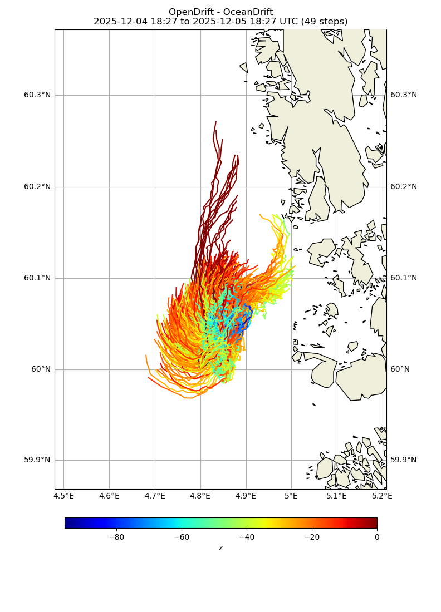
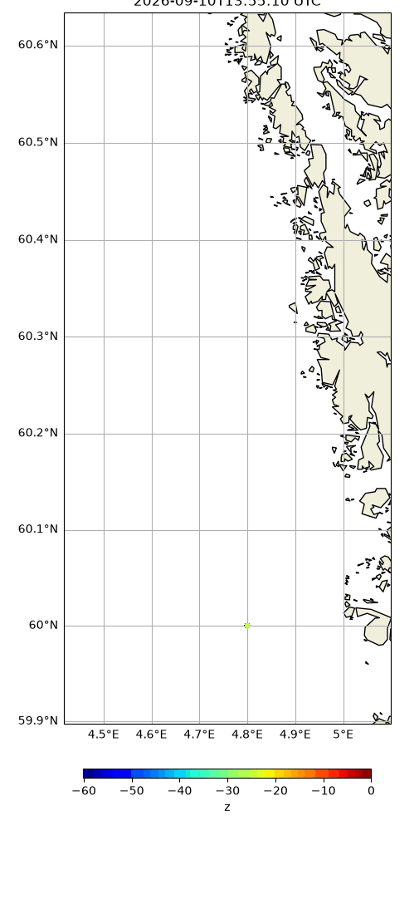

Note
Go to the end to download the full example code.
Drift at different depths
from datetime import datetime, timedelta
import numpy as np
from opendrift.models.oceandrift import OceanDrift
o = OceanDrift(loglevel=20) # Set loglevel to 0 for debug information
18:27:32 INFO opendrift:576: OpenDriftSimulation initialised (version 1.14.6 / v1.14.6-38-g5a9c4df)
Using live data from Thredds
o.add_readers_from_list([
'https://thredds.met.no/thredds/dodsC/fou-hi/norkystv3_800m_m00_be'])
Adding some diffusion
o.set_config('drift:horizontal_diffusivity', 10) # m2/s
Seed 1000 elements at random depths
z = -np.random.rand(2000)*50
o.seed_elements(lon=4.8, lat=60.0, z=z, radius=0, number=2000,
time=datetime.now())
print(o)
18:27:32 INFO opendrift.models.basemodel.environment:203: Adding a global landmask from GSHHG
18:27:36 INFO opendrift.models.basemodel.environment:227: Fallback values will be used for the following variables which have no readers:
18:27:36 INFO opendrift.models.basemodel.environment:230: x_sea_water_velocity: 0.000000
18:27:36 INFO opendrift.models.basemodel.environment:230: y_sea_water_velocity: 0.000000
18:27:36 INFO opendrift.models.basemodel.environment:230: sea_surface_height: 0.000000
18:27:36 INFO opendrift.models.basemodel.environment:230: x_wind: 0.000000
18:27:36 INFO opendrift.models.basemodel.environment:230: y_wind: 0.000000
18:27:36 INFO opendrift.models.basemodel.environment:230: upward_sea_water_velocity: 0.000000
18:27:36 INFO opendrift.models.basemodel.environment:230: ocean_vertical_diffusivity: 0.000000
18:27:36 INFO opendrift.models.basemodel.environment:230: sea_surface_wave_significant_height: 0.000000
18:27:36 INFO opendrift.models.basemodel.environment:230: sea_surface_wave_stokes_drift_x_velocity: 0.000000
18:27:36 INFO opendrift.models.basemodel.environment:230: sea_surface_wave_stokes_drift_y_velocity: 0.000000
18:27:36 INFO opendrift.models.basemodel.environment:230: ocean_mixed_layer_thickness: 50.000000
18:27:36 INFO opendrift.models.basemodel.environment:230: sea_floor_depth_below_sea_level: 10000.000000
===========================
Model: OceanDrift (OpenDrift version 1.14.6)
0 active Lagrangian3DArray particles (0 deactivated, 2000 scheduled)
-------------------
Environment variables:
-----
land_binary_mask
1) global_landmask
-----
Readers not added for the following variables:
ocean_mixed_layer_thickness
ocean_vertical_diffusivity
sea_floor_depth_below_sea_level
sea_surface_height
sea_surface_wave_significant_height
sea_surface_wave_stokes_drift_x_velocity
sea_surface_wave_stokes_drift_y_velocity
upward_sea_water_velocity
x_sea_water_velocity
x_wind
y_sea_water_velocity
y_wind
---
Lazy readers:
LazyReader: https://thredds.met.no/thredds/dodsC/fou-hi/norkystv3_800m_m00_be
Discarded readers:
===========================
Running model
o.run(duration=timedelta(hours=24), time_step=1800)
18:27:36 INFO opendrift:1803: Skipping environment variable ocean_vertical_diffusivity because of condition ['drift:vertical_mixing', 'is', False]
18:27:36 INFO opendrift:1803: Skipping environment variable ocean_mixed_layer_thickness because of condition ['drift:vertical_mixing', 'is', False]
18:27:36 INFO opendrift:1814: Storing previous values of element property lon because of condition (('general:coastline_action', 'in', ['stranding', 'previous']), 'or', ('general:seafloor_action', 'in', ['previous']))
18:27:36 INFO opendrift:1814: Storing previous values of element property lat because of condition (('general:coastline_action', 'in', ['stranding', 'previous']), 'or', ('general:seafloor_action', 'in', ['previous']))
18:27:36 INFO opendrift:1822: Storing previous values of environment variable sea_surface_height because of condition ['drift:vertical_advection', 'is', True]
18:27:36 INFO opendrift:952: Using existing reader for land_binary_mask to move elements to ocean
18:27:36 INFO opendrift:982: All points are in ocean
18:27:36 INFO opendrift:2111: 2025-12-04 18:27:32.097887 - step 1 of 48 - 2000 active elements (0 deactivated)
18:27:36 INFO opendrift.readers:63: Opening file with xr.open_dataset
18:27:39 INFO opendrift.readers.reader_netCDF_CF_generic:332: Detected dimensions: {'x': 'X', 'y': 'Y', 'z': 'depth', 'time': 'time'}
18:27:39 INFO opendrift.readers.basereader:176: Variable x_sea_water_velocity will be rotated from eastward_sea_water_velocity
18:27:39 INFO opendrift.readers.basereader:176: Variable y_sea_water_velocity will be rotated from northward_sea_water_velocity
18:27:39 INFO opendrift.readers.basereader:176: Variable x_wind will be rotated from eastward_wind
18:27:39 INFO opendrift.readers.basereader:176: Variable y_wind will be rotated from northward_wind
18:27:41 INFO opendrift:2111: 2025-12-04 18:57:32.097887 - step 2 of 48 - 2000 active elements (0 deactivated)
18:27:41 INFO opendrift:2111: 2025-12-04 19:27:32.097887 - step 3 of 48 - 2000 active elements (0 deactivated)
18:27:43 INFO opendrift:2111: 2025-12-04 19:57:32.097887 - step 4 of 48 - 2000 active elements (0 deactivated)
18:27:43 INFO opendrift:2111: 2025-12-04 20:27:32.097887 - step 5 of 48 - 2000 active elements (0 deactivated)
18:27:44 INFO opendrift:2111: 2025-12-04 20:57:32.097887 - step 6 of 48 - 2000 active elements (0 deactivated)
18:27:44 INFO opendrift:2111: 2025-12-04 21:27:32.097887 - step 7 of 48 - 2000 active elements (0 deactivated)
18:27:45 INFO opendrift:2111: 2025-12-04 21:57:32.097887 - step 8 of 48 - 2000 active elements (0 deactivated)
18:27:45 INFO opendrift:2111: 2025-12-04 22:27:32.097887 - step 9 of 48 - 2000 active elements (0 deactivated)
18:27:47 INFO opendrift:2111: 2025-12-04 22:57:32.097887 - step 10 of 48 - 2000 active elements (0 deactivated)
18:27:47 INFO opendrift:2111: 2025-12-04 23:27:32.097887 - step 11 of 48 - 2000 active elements (0 deactivated)
18:27:48 INFO opendrift:2111: 2025-12-04 23:57:32.097887 - step 12 of 48 - 2000 active elements (0 deactivated)
18:27:48 INFO opendrift:2111: 2025-12-05 00:27:32.097887 - step 13 of 48 - 2000 active elements (0 deactivated)
18:27:49 INFO opendrift:2111: 2025-12-05 00:57:32.097887 - step 14 of 48 - 2000 active elements (0 deactivated)
18:27:49 INFO opendrift:2111: 2025-12-05 01:27:32.097887 - step 15 of 48 - 2000 active elements (0 deactivated)
18:27:52 INFO opendrift:2111: 2025-12-05 01:57:32.097887 - step 16 of 48 - 2000 active elements (0 deactivated)
18:27:52 INFO opendrift:2111: 2025-12-05 02:27:32.097887 - step 17 of 48 - 2000 active elements (0 deactivated)
18:27:53 INFO opendrift:2111: 2025-12-05 02:57:32.097887 - step 18 of 48 - 2000 active elements (0 deactivated)
18:27:53 INFO opendrift:2111: 2025-12-05 03:27:32.097887 - step 19 of 48 - 2000 active elements (0 deactivated)
18:27:55 INFO opendrift:2111: 2025-12-05 03:57:32.097887 - step 20 of 48 - 2000 active elements (0 deactivated)
18:27:55 INFO opendrift:2111: 2025-12-05 04:27:32.097887 - step 21 of 48 - 2000 active elements (0 deactivated)
18:27:56 INFO opendrift:2111: 2025-12-05 04:57:32.097887 - step 22 of 48 - 2000 active elements (0 deactivated)
18:27:56 INFO opendrift:2111: 2025-12-05 05:27:32.097887 - step 23 of 48 - 2000 active elements (0 deactivated)
18:27:57 INFO opendrift:2111: 2025-12-05 05:57:32.097887 - step 24 of 48 - 2000 active elements (0 deactivated)
18:27:58 INFO opendrift:2111: 2025-12-05 06:27:32.097887 - step 25 of 48 - 2000 active elements (0 deactivated)
18:27:59 INFO opendrift:2111: 2025-12-05 06:57:32.097887 - step 26 of 48 - 2000 active elements (0 deactivated)
18:27:59 INFO opendrift:2111: 2025-12-05 07:27:32.097887 - step 27 of 48 - 2000 active elements (0 deactivated)
18:28:01 INFO opendrift:2111: 2025-12-05 07:57:32.097887 - step 28 of 48 - 2000 active elements (0 deactivated)
18:28:01 INFO opendrift:2111: 2025-12-05 08:27:32.097887 - step 29 of 48 - 2000 active elements (0 deactivated)
18:28:02 INFO opendrift:2111: 2025-12-05 08:57:32.097887 - step 30 of 48 - 2000 active elements (0 deactivated)
18:28:03 INFO opendrift:2111: 2025-12-05 09:27:32.097887 - step 31 of 48 - 2000 active elements (0 deactivated)
18:28:04 INFO opendrift:2111: 2025-12-05 09:57:32.097887 - step 32 of 48 - 2000 active elements (0 deactivated)
18:28:04 INFO opendrift:2111: 2025-12-05 10:27:32.097887 - step 33 of 48 - 2000 active elements (0 deactivated)
18:28:05 INFO opendrift:2111: 2025-12-05 10:57:32.097887 - step 34 of 48 - 2000 active elements (0 deactivated)
18:28:05 INFO opendrift:2111: 2025-12-05 11:27:32.097887 - step 35 of 48 - 2000 active elements (0 deactivated)
18:28:07 INFO opendrift:2111: 2025-12-05 11:57:32.097887 - step 36 of 48 - 2000 active elements (0 deactivated)
18:28:07 INFO opendrift:2111: 2025-12-05 12:27:32.097887 - step 37 of 48 - 2000 active elements (0 deactivated)
18:28:08 INFO opendrift:2111: 2025-12-05 12:57:32.097887 - step 38 of 48 - 2000 active elements (0 deactivated)
18:28:08 INFO opendrift:2111: 2025-12-05 13:27:32.097887 - step 39 of 48 - 2000 active elements (0 deactivated)
18:28:10 INFO opendrift:2111: 2025-12-05 13:57:32.097887 - step 40 of 48 - 2000 active elements (0 deactivated)
18:28:10 INFO opendrift:2111: 2025-12-05 14:27:32.097887 - step 41 of 48 - 2000 active elements (0 deactivated)
18:28:11 INFO opendrift:2111: 2025-12-05 14:57:32.097887 - step 42 of 48 - 2000 active elements (0 deactivated)
18:28:12 INFO opendrift:2111: 2025-12-05 15:27:32.097887 - step 43 of 48 - 2000 active elements (0 deactivated)
18:28:13 INFO opendrift:2111: 2025-12-05 15:57:32.097887 - step 44 of 48 - 2000 active elements (0 deactivated)
18:28:13 INFO opendrift:2111: 2025-12-05 16:27:32.097887 - step 45 of 48 - 2000 active elements (0 deactivated)
18:28:15 INFO opendrift:2111: 2025-12-05 16:57:32.097887 - step 46 of 48 - 2000 active elements (0 deactivated)
18:28:15 INFO opendrift:2111: 2025-12-05 17:27:32.097887 - step 47 of 48 - 2000 active elements (0 deactivated)
18:28:16 INFO opendrift:2111: 2025-12-05 17:57:32.097887 - step 48 of 48 - 2000 active elements (0 deactivated)
Plot results with lines and particles colored by depth
print(o)
o.plot(linecolor='z', buffer=.1, show_elements=False)
o.animation(color='z', buffer=.1)

===========================
--------------------
Reader performance:
--------------------
global_landmask
0:00:01.8 total
0:00:00.0 preparing
0:00:01.8 reading
0:00:00.0 masking
--------------------
https://thredds.met.no/thredds/dodsC/fou-hi/norkystv3_800m_m00_be
0:00:35.3 total
0:00:00.0 preparing
0:00:34.8 reading
0:00:01.0 interpolation
0:00:00.0 interpolation_time
0:00:00.4 rotating vectors
0:00:00.0 masking
--------------------
Performance:
46.3 total time
4.1 configuration
0.0 preparing main loop
0.0 moving elements to ocean
40.3 main loop
0.1 updating elements
1.8 cleaning up
--------------------
===========================
Model: OceanDrift (OpenDrift version 1.14.6)
2000 active Lagrangian3DArray particles (0 deactivated, 0 scheduled)
-------------------
Environment variables:
-----
land_binary_mask
1) global_landmask
-----
sea_floor_depth_below_sea_level
sea_surface_height
upward_sea_water_velocity
x_sea_water_velocity
x_wind
y_sea_water_velocity
y_wind
1) https://thredds.met.no/thredds/dodsC/fou-hi/norkystv3_800m_m00_be
-----
Readers not added for the following variables:
sea_surface_wave_significant_height
sea_surface_wave_stokes_drift_x_velocity
sea_surface_wave_stokes_drift_y_velocity
Discarded readers:
Time:
Start: 2025-12-04 18:27:32.097887 UTC
Present: 2025-12-05 18:27:32.097887 UTC
Calculation steps: 48 * 0:30:00 - total time: 1 day, 0:00:00
Output steps: 49 * 0:30:00
===========================
18:29:22 INFO opendrift:4656: Saving animation to /root/project/docs/source/gallery/animations/example_depth_0.gif...
18:30:00 INFO opendrift:3091: Time to make animation: 0:00:39.387105

Total running time of the script: (2 minutes 37.639 seconds)